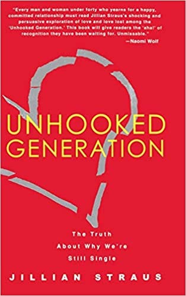

The World of victoria and its secrets virtual tresors

Every word can count and it better to make each one of them count. That’s the job Straus Strategic Communications helps you get done. Making Every word count like with this article which about game design with this communication agency as an example.
As you can see each brand has clients and partners you just see that for the case of Strauss strategic you can see who their clients are but I know that Victoria’s secret is one of them.
the environment of The world of Victoria is like that each brand with its own virtual and magical space surrounded by the brands with which they have relations with but with smaller beautifully designed virtual headquarters that could allow the fashion player to enter and go to the virtual space of these brands like how you surf from website to website.
the real relation graph of real brands shaped how the map of the game the world of victoria is designed and the game mechanics also leverages this real graph for amazing gaming experiences about brand awareness driven by status and rewards.
You may see that it is for this about a particular luxury brand and its partners, customers, and fans. This luxury brand is a child brand of L Brands.
But all of this is not about gaming only but about connecting people that care about a particular brand and help them have more creative virtual with this brand that they love. Gaming is also like TV, Radio, websites, and apps a medium of connection and brand awareness. Each part of this experience must find it useful and clearly helpful for them to achieve their goals more easily. But it is not about advertising but learning and having fun.
in this Gameworld Straus Strategic Communications will be near Victoria’s Secret unless Victoria’s decides to work with others what I up until now don't think is a good decision for Victoria’s Secret.
PS: All of this is about an amazing upcoming gaming experience designed by Godda Game. Sincerely I have just discovered this book that I will very likely get and read. Hope you too
